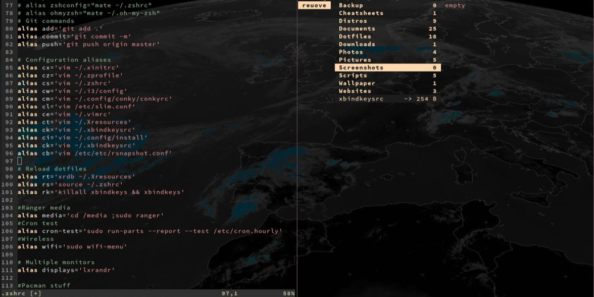
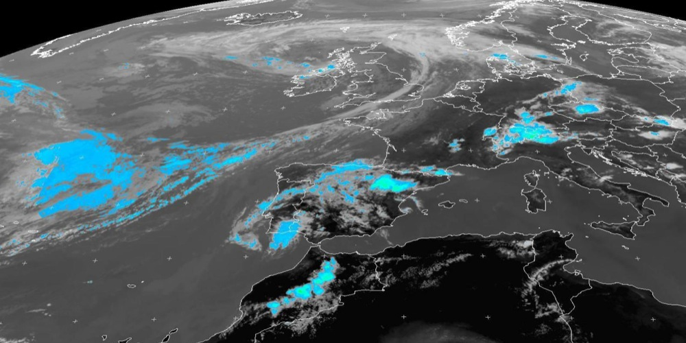
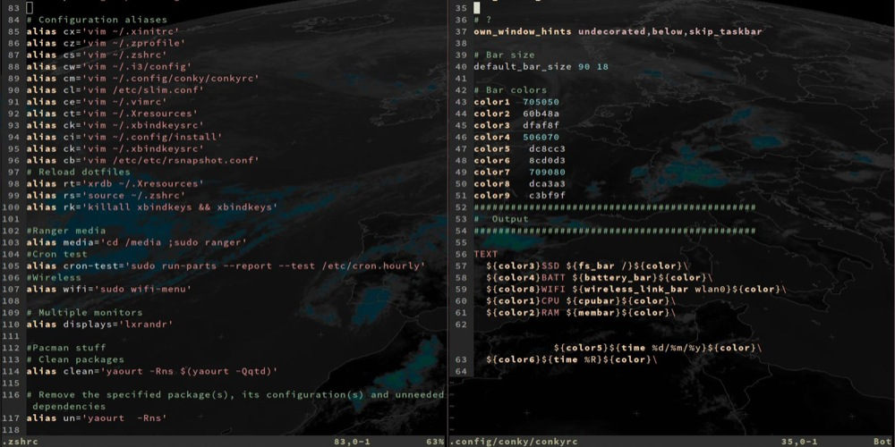
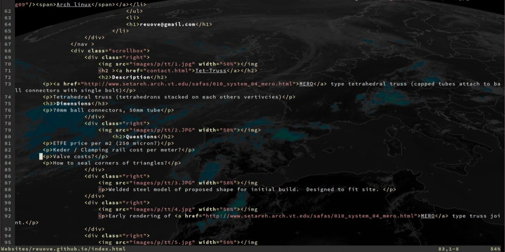

Arch linux
Having grown up using Mackintosh computers I was growing increasingly disk-satisfied with the Mac experience. After I purchased a new Lenovo T420 laptop for a very reasonable price, I couldn't bring myself to install windows on it, so I decided to experiment with Linux.
I found out I could use a small program called cron to automate a program called wget which would download a multi sensor precipitation estimate image derived from a live feed of a geostationary satelite called Meteosat-7
I think its taken me about 6 months of tweaking, learning, tweaking, occasional intense frustration to get to the point where I have pretty much configured everything exactly how I want it. That includes learning how to use the terminal, and Vim text editor, and various other terminal app. Learning about filesystems, and bootloaders, and wireless interfaces. One thing that helped allot was the suggestion of storing a backup of my configuration files online using the version control software Github. This meant if I accidentally messed up one of the files while i was trying to tweak it and caused the computer to be unusable, I could always download and revert back to the original, and thus restore my system.
I spent some time researching which would be the best distribution or flavour of Linux to install. I soon stumbled across mention of Arch linux. The good thing going for it is that you basically build it yourself from scratch, so you can make it exactly how you want it, right down to the tiniest detail, and deepest configuration file. The bad thing going for it is that you have to learn how to do this which can be quite a long and painful process. 